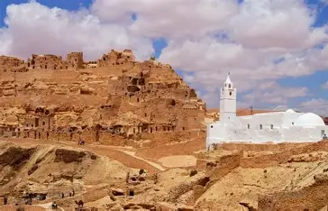
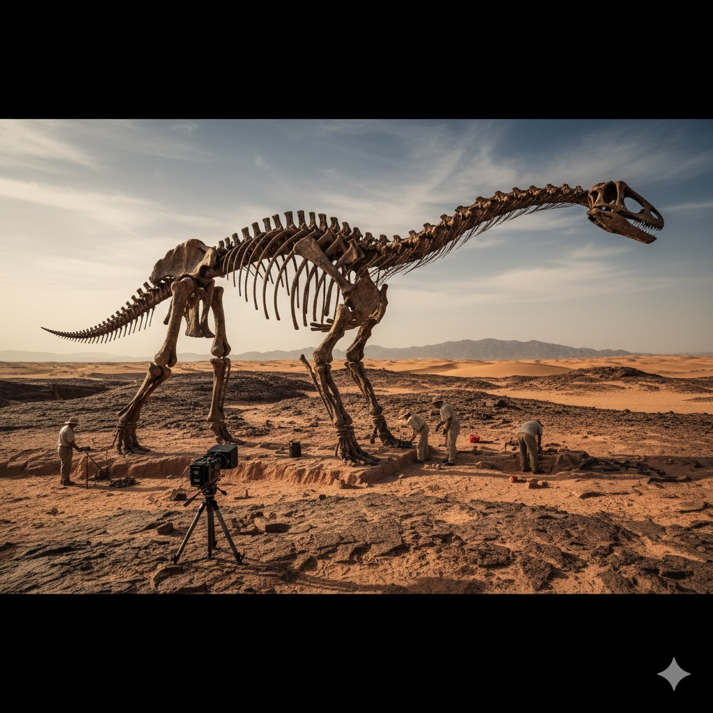

Beyond the golden dunes of the Sahara lie two of the most extraordinary destinations on Earth. Matmata and Tataouine are not just cities; they are living museums where ancient Berber traditions meet the cinematic landscapes of Star Wars. This region offers a breathtaking contrast between underground dwellings and mountain-top fortresses.
Step into a world hidden beneath the surface. Matmata is world-renowned for its Troglodyte houses, where locals have lived in circular pits carved into the ground for centuries. This unique architecture provides a natural "air conditioning" against the desert heat and offers a surreal, crater-filled landscape that feels truly galactic.
Famous for its rugged mountains and majestic Ksour (fortified granaries), Tataouine is the gateway to the deep desert. Explore the stunning hilltop village of Chenini or marvel at the intricate architecture of Ksar Ouled Soltane. It’s a place where history is written in stone and the horizons are endless.
| Feature | Matmata | Tataouine |
|---|---|---|
| Architecture | Underground Troglodyte pits | Hilltop Ksour (Fortified Granaries) |
| Landscape | Crater-like, soft soil valleys | Rugged mountains & rocky plains |
| Key Highlight | Hotel Sidi Driss (Luke's Home) | Chenini Village & Ksar Hadada |
| Vibe | Intimate and subterranean | Vast, epic and nomadic |
The Ksour are architectural masterpieces unique to the Berber tribes
of southern Tunisia. More than just buildings, they were
impenetrable fortresses designed to withstand the
harshest desert conditions and constant tribal raids by nomadic groups
such as the Banu Hilal or neighboring rival tribes.
Built on high plateaus or tucked into mountain ridges, these
"skyscrapers" allowed tribes to spot invaders from miles away, acting
as an early warning system across the Saharan plains.
The defensive genius lies in the Ghorfas (storage
cells). Stacked up to four stories high, the only way to reach the
upper levels was by using retractable ropes or notched palm trunks as
ladders. During an attack, these were pulled up, leaving the enemy
with no way to climb the smooth, vertical walls. Inside, the Ksar was
a self-sustaining city; the thick dry-stone walls kept grain, oil, and
dates cool and fresh for years, ensuring the tribe could survive long
sieges without ever surrendering.
Walking through the courtyard today, you can still feel the echoes of
the guardians who stood on the rooftops, protecting their families'
survival. These structures aren't just granaries; they are monuments
to Berber resilience and engineering.


Perched on a hilltop, **Douiret** is an ancient Berber crest village that seems to defy gravity. Famous for its white mosque and rock-cut dwellings, it offers a panoramic view of the rugged Tataouine landscape. Walking through its abandoned paths feels like traveling through a silent history of resilience and stone.


Millions of years ago, Tataouine was a lush landscape inhabited by giants. In 2011, paleontologists discovered the remains of Tataouinea hannibalis, a unique long-necked dinosaur that lived 110 million years ago. Today, the region is a world-class site for fossils, where the desert sands still hide the secrets of a prehistoric era.
Rising dramatically from a jagged mountain ridge, Chenini is perhaps the most breathtaking Berber village in Tunisia. This ancient "ksar" was strategically built to be invisible from a distance, protecting its inhabitants for centuries. With its iconic white mosque standing contrast against the desert stone and its houses carved directly into the cliffs, Chenini offers a timeless glimpse into the soul of the south.
In 1976, **George Lucas** arrived in southern Tunisia searching for a landscape that looked like another planet. He found it in the rugged mountains of Tataouine and the craters of Matmata. The connection was so deep that he named the iconic desert planet "Tatooine"—a direct tribute to the city that hosted his vision.
The most famous site is the Hotel Sidi Driss in Matmata. This traditional troglodyte home was transformed into the "Lars Homestead," where a young Luke Skywalker gazed at the twin suns. Even today, the original set decorations and murals remain, allowing fans to walk through the same dining room where the cinematic legend began.
Further south, the honeycomb cells of Ksar Hadada and Ksar Medenine were used to bring the slave quarters of Mos Espa to life in The Phantom Menace, proving that the ancient Berber architecture was truly ahead of its time.
Luke Skywalker's Childhood Home (Matmata)
Slave Quarters of Mos Espa (Tataouine)
Known as "Star Wars Canyon" (Jundland Wastes)